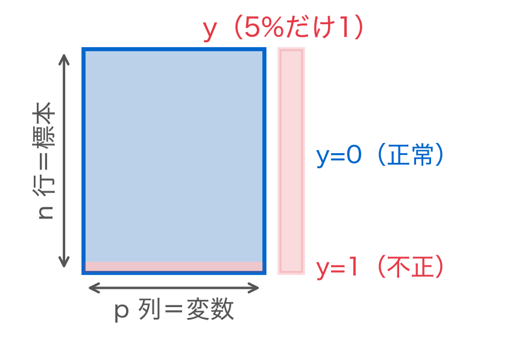
第8回 決定理論——しきい値を原理から決める
0.5 はどこから来たのか——誤りのコストを決めれば最適なしきい値は式で出る
場面：0.5のままでいいのか
不正検知の仕組みを作った。モデルは各取引に「不正である確率」を返してくる。
担当者に聞かれた。
「しきい値、0.5のままでいいんですか？」
あなたは何と答えるか。0.5 という数はどこから来たのか。
今回の問い
第7回では「閾値はトレードオフのつまみだ」と学んだ。つまみがあることは分かった。
- では どこに合わせるのが正しいのか
- 0.5 は誰が決めた既定値なのか
- 「精度が高いモデル」が現場で役に立たないのはなぜか
今回は、しきい値を原理から決める。決めるには新しい材料が1つ要る。
データの四角形：行の色が偏っている
不均衡＝行の色の偏り。6000件のうち不正は約300件しかない。
位置づけ：つまみの目盛りを決める
- 第7回：ロジスティック回帰が確率を出す。閾値はトレードオフのつまみだと見た
- 第7回：0.5 に固定する罠、不均衡で精度が壊れる罠を「落とし穴」として並べた
- 今回：つまみの目盛りを決める原理を作る。落とし穴には理由があった
新しい材料は「誤りのコスト」。これを決めれば、しきい値は式で出る。
定義①：誤りには2種類ある
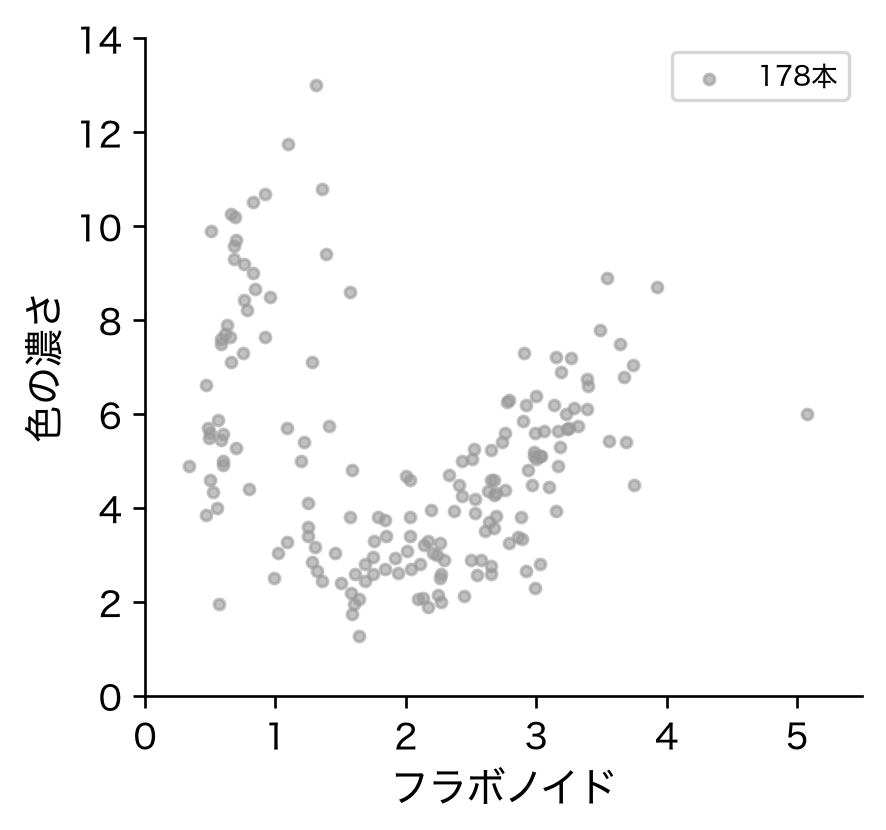
この2つはまったく違う損害を生む。それなのに精度は、両方を等しく「1件の誤り」と数える。
定義②：損失行列
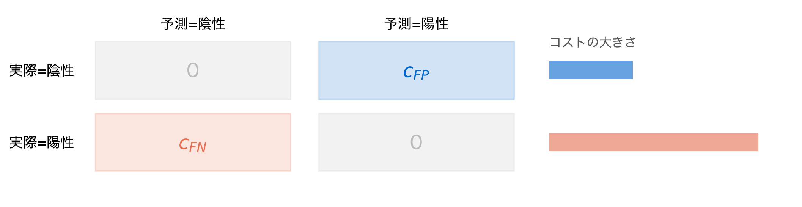
この2つの数を決めることが、しきい値を決めることに等しい。
定義③：期待損失
しきい値 t を決めれば予測が決まり、損失の合計が決まる。1件あたりの平均が期待損失。
R(t)=c_{\mathrm{FN}}\,P(\hat y=0,\,y=1)\;+\;c_{\mathrm{FP}}\,P(\hat y=1,\,y=0)
読み方：「見逃しのコスト × 見逃す確率」＋「誤警報のコスト × 誤警報の確率」。それだけ。
t を上げれば陽性判定が減り、誤警報は減って見逃しが増える。R(t) を最小にする t を探す。
デモ：R(t) を描く
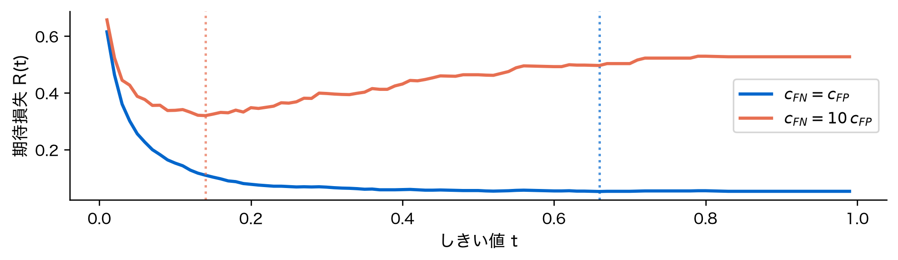
同じデータ・同じモデルなのに、コストを変えると最小点が動く。
最小点はどこにあるか
c_FN = c_FP のとき最小の t : 0.66
c_FN = 10c_FP のとき最小の t: 0.14- 誤りの重さが同じなら、最小点は 0.66——おおむね 0.5 の近く
- 見逃しが10倍重いなら、最小点は ぐっと左へ動く
- 見逃したくないのだから、迷ったら陽性と判定する——直感どおり
では、この最小点は式で書けるのか。次の部で導く。
［再訪］精度は特別な場合
第7回で「全部正常と答えれば精度95%」という話をした。いま言い直せる。
- 精度は「誤りの件数」を数えている。つまり c_{\mathrm{FP}}=c_{\mathrm{FN}}=1 と置いた期待損失
- 精度を使うとは、2種類の誤りが同じ重さだと宣言すること
精度が壊れるのではない。壊れた仮定を精度に押しつけていたのである。
導出①：天秤で考える
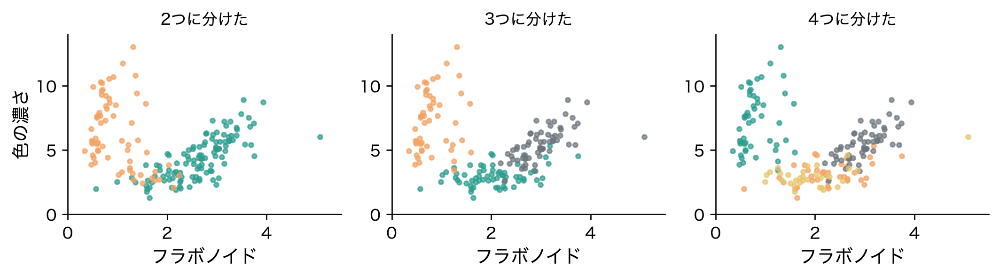
軽いほうの皿を選ぶ。
c_{\mathrm{FN}}\,p \;>\; c_{\mathrm{FP}}\,(1-p)
導出②：最適しきい値
さきほどの不等式を p について解く。移項して両辺を (c_{\mathrm{FP}}+c_{\mathrm{FN}}) で割るだけ。
p \;>\; \frac{c_{\mathrm{FP}}}{c_{\mathrm{FP}}+c_{\mathrm{FN}}} \;=\; t^{\star}
読み方：「誤警報のコストを、二つのコストの合計で割る」。それだけ。
この式にデータは出てこない。モデルも出てこない。 出てくるのはコストの比だけである。
なぜ 0.5 が既定値なのか
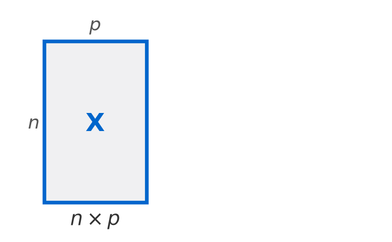
c_{\mathrm{FP}}=c_{\mathrm{FN}} を代入すると t^{\star}=1/2。
0.5 は「2種類の誤りが同じ重さ」という仮定の表明だった。 中立な既定値ではない。
デモ：理論値と実測を比べる
比 実測の最小t 理論値t*
1 0.66 0.50
5 0.19 0.17
10 0.14 0.09
50 0.02 0.02ぴったりは一致しない。 コスト比を上げると両方とも下がるという傾向は合うが、値はずれる。
なぜか。t^{\star} は「モデルが出す確率が正しい」という前提の上に立っているからである。
落とし穴：確率は正しいのか
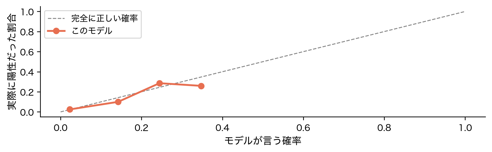
「確率0.3」と言った取引のうち本当に3割が不正でなければ、t^{\star} もずれる。
［再訪］class_weight は損失の重み
w \;=\; \frac{c_{\mathrm{FN}}}{c_{\mathrm{FP}}}
読み方：「重みとは、見逃しが誤警報の何倍重いかという宣言」。
つまり class_weight としきい値は、同じことを別の場所でやっている。
デモ：重みとしきい値の等価性

別の設定なのに、ほぼ同じ混同行列になる。どちらも同じコスト比を表現しているからである。
事前確率が損失に入る仕組み
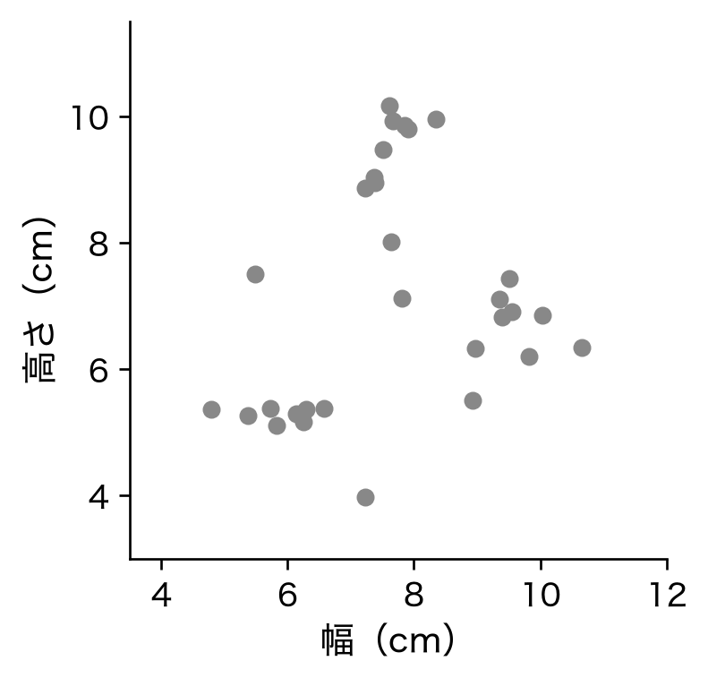
P(\hat y=0,\,y=1)=\pi\;\cdot\;P(\hat y=0\mid y=1)
読み方：「陽性の割合 \pi × 陽性のうち見逃す率」。割合 \pi が式の中に入ってくる。
ROC が事前確率に不変な理由
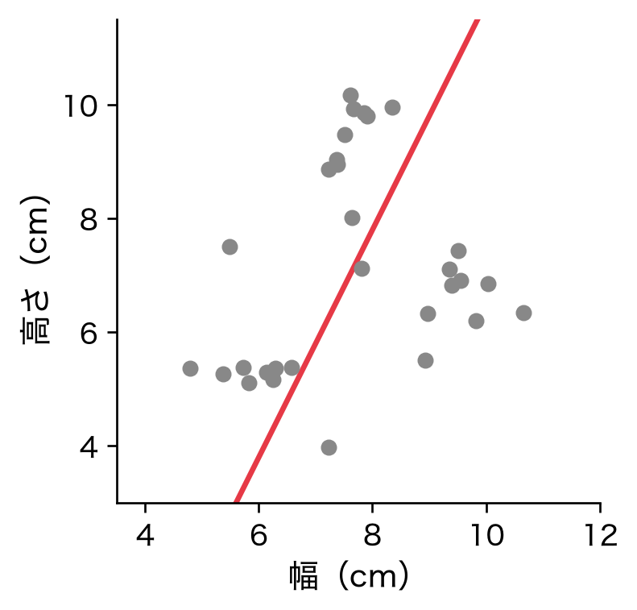
TPR も FPR もクラスの中だけを見ている。だから箱の大きさ（クラス比率）が変わっても動かない。
ROC は不均衡の影響を受けない。それは長所であり、同時に弱点でもある。
PR が事前確率に依存する理由
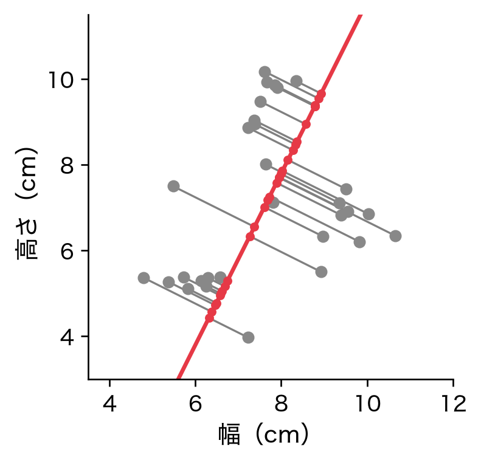
分母に FP（陰性由来） が混ざる。陰性が増えれば適合率は下がる。
適合率だけがクラス比率を見ている。 だから PR 曲線は不均衡に反応する。
デモ：不均衡度を変えて比べる
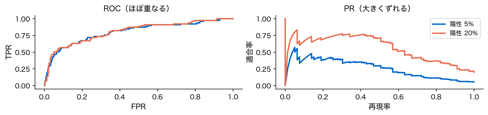
同じモデル・同じ確率なのに、ROC は重なり PR はずれる。 理論のとおりである。
［再訪］不均衡では PR を見る
- ROC は不均衡に反応しない。95:5 でも 50:50 でも同じ曲線になる
- 現場で知りたいのは「陽性と言った中で本当に陽性は何割か」——これは適合率
- その割合はクラス比率で変わる。だから PR を見る必要がある
経験則ではなく、どちらの量が事前確率を含むかという区別だった。
AUC の意味を言い直す
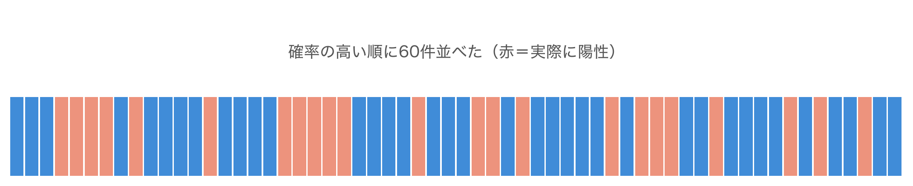
AUC は「赤がどれだけ左に寄っているか」を測る量。しきい値を決めずに順位だけを見ている。
決定理論の立場では、しきい値を決めた後の期待損失こそが本番である。
帰結①：精度のパラドックスの正体
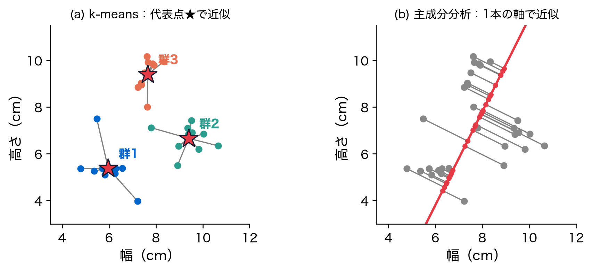
精度が壊れるのではない。壊れた仮定を精度に押しつけていたのである。
帰結②：F1 は何を仮定しているか
F_1=\frac{2\,\text{適合率}\cdot\text{再現率}}{\text{適合率}+\text{再現率}}
読み方：「適合率と再現率を、対等に扱って平均する」。
適合率と再現率を対称に扱う。入れ替えても値が変わらない。 つまり F1 も暗黙に c_{\mathrm{FP}}\approx c_{\mathrm{FN}} を置いている。
コストが非対称な現場では、期待損失は最小にならない。
デモ：F1 が最適でない例
pred = lambda t: (p_test >= t).astype(int)
f1s = [f1_score(y_test, pred(t), zero_division=0) for t in ts]
losses = [expected_loss(t, c_fp=1, c_fn=10) for t in ts]
t_f1, t_cost = ts[int(np.argmax(f1s))], ts[int(np.argmin(losses))]
print(f"F1 最大の t={t_f1:.2f} "
f"期待損失最小の t={t_cost:.2f}（理論 {1/11:.2f}）")F1 最大の t=0.19 期待損失最小の t=0.14（理論 0.09）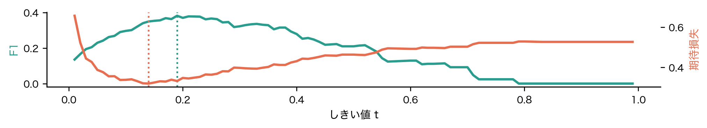
2本の最適点がずれています。
［再訪］層化分割が要る理由

無作為に切ると、区画ごとに陽性の割合 \pi が揺れる。\pi は期待損失に直接入る量だった。
比率が崩れると、評価そのものが別の問題を測ってしまう。
［再訪］リサンプリングの副作用
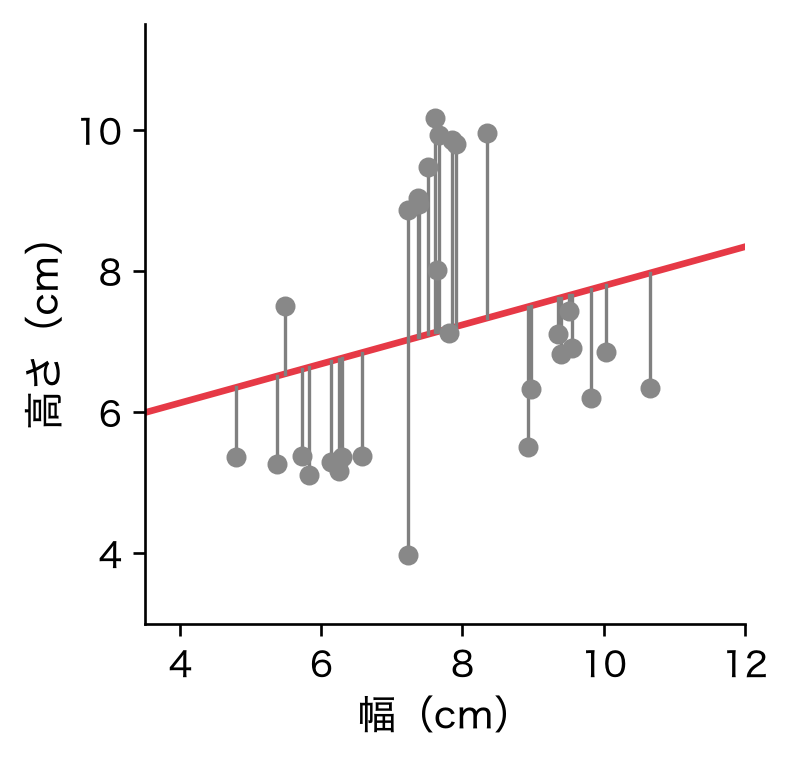
オーバーサンプリングは事前確率を書き換える。確率も t^{\star} も変わるので、変わることを知って使う。
コストさえ決まればしきい値は決まる——ただ、そのコストに落とし穴があるかもしれない。
落とし穴：コストは推定できるのか
- この2つはデータからは決まらない。 どれだけサンプルを集めても出てこない
- 誤警報1件の手間、見逃し1件の損害——これは業務の問題である
- 統計の仕事は「コストを決めればしきい値が決まる」と示すところまで
決めるのは現場である。
次回への布石
今回はラベル y があり、誤りに値段をつけられた。だから損失を定義できた。
- ではラベルが無いときはどうなるのか
- 何を誤りと呼べばよいのか。そもそも損失を定義できるのか
次回（第9回）は教師あり学習と教師なし学習の違いを、損失関数の有無から整理する。
［再訪］評価指標は何を仮定しているか
| 指標 | 見ているもの | 暗黙の仮定 |
|---|---|---|
| 精度 | 誤りの件数 | c_{\mathrm{FP}}=c_{\mathrm{FN}} |
| F1 | 適合率と再現率の調和平均 | 2つの誤りをほぼ対等に扱う |
| ROC・AUC | クラス内の割合 | 事前確率を見ない |
| PR・AP | 陽性と言った中の正解率 | 事前確率に依存する |
| 期待損失 | コストの合計 | 仮定を自分で書く |
どの指標も暗黙のコストを持っていると見る。
まとめ：決定理論が教えた3つ
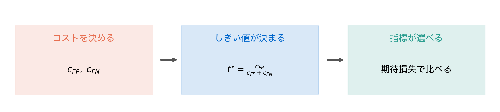
出発点は統計ではなく業務である。コストを決めた時点で、後は式が答えを出す。
まとめ（3点）
- しきい値はコスト比で決まる—— t^{\star}=c_{\mathrm{FP}}/(c_{\mathrm{FP}}+c_{\mathrm{FN}})。データにもモデルにも依存しない
- 0.5 は中立ではない——「2種類の誤りが同じ重さ」という仮定の表明だった
- どの指標も暗黙のコストを持つ——精度も F1 も ROC も。仮定を自分で書けば、選ぶ必要がなくなる
第7回で「つまみ」と呼んだものに、目盛りが付いた。
次回予告
次回（第9回）は、教師あり学習と教師なし学習の違いを整理する。
- 今回は誤りに値段をつけられた。ラベル y があったからである
- ラベルが無いとき、何を最小化すればよいのか
- 同じ顧客データに両方のアプローチを当て、結果がどう違うかを見る
損失関数があるかないか——その一点が2つの世界を分けている。